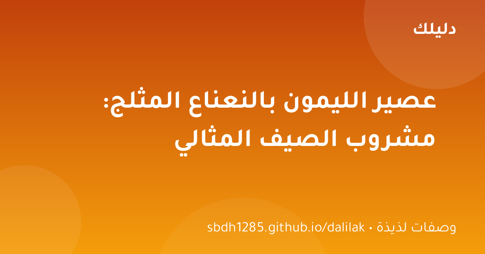

🍽️ وصفات لذيذة
مناقيش الزعتر: وصفة بيتية سهلة واقتصادية خطوة بخطوة
مناقيش الزعتر الشهية كما في المخابز — عجينة هشة وخلطة زعتر غنية، بخطوات واضحة ومكونات متوفرة في كل بيت.

في عز الحر، لا شيء يضاهي كوبًا باردًا من عصير الليمون بالنعناع. المشروب الذي تطلبه في كل مطعم، والذي يبدو سهلًا لكنه يحتاج لمسات صغيرة ليكون مثاليًا: حموضة متوازنة، حلاوة ناعمة، ونكهة نعناع منعشة لا تطغى. إليك الوصفة المضبوطة.
زيوت النعناع العطرية مخزنة في خلايا الأوراق، وفركها بلطف يكسر هذه الخلايا فتتحرر النكهة. لو أضفت الأوراق كاملة كما هي، ستحصل على عصير ليمون عادي بنكهة نعناع خفيفة جدًا لا تكاد تشعر بها.
قدّمه في أكواب طويلة مع شريحة ليمون على الحافة وورقة نعناع تطفو فوق الثلج. للضيافة، أضف قشًا ملونًا وصحنًا من المكسرات بجانبه. وللأطفال، استخدم عصيرًا بنسبة أقل مع مزيد من الثلج المجروش.
الليمون والنعناع الطازج أفضل ما يقدم فورًا، لكن العصير يحفظ في الثلاجة يومًا كاملًا في إبريق مغلق (أخرج النعناع بعد 6 ساعات حتى لا يغمق الطعم). لا تجمّده أبدًا — الثلج يخفف النكهة ويغير القوام.
عصير الليمون بالنعناع مشروب بسيط يبدو للوهلة الأولى لا يحتاج وصفة، لكن السر في ثلاث خطوات: سكر مذاب مسبقًا، نعناع مفروك، وتبريد كافٍ قبل التقديم. جربها اليوم وستوفر على نفسك زيارة المطعم — وستفاجئ ضيوفك بأناقة كوبك.
ابدأ بعصير ليمون طبيعي ونعناع مفروم، ثم أضف المحلي تدريجيًا حتى تصل لذوقك دون إفراط. تركيز النعناع يحدد الانتعاش؛ عصره بخفة لا هرسه يحفظ اللون الأخضر. للنسخة الصحية استبدل السكر بمربى التمر المذاب.
مناقيش الزعتر الشهية كما في المخابز — عجينة هشة وخلطة زعتر غنية، بخطوات واضحة ومكونات متوفرة في كل بيت.

شوربة العدس — الطبق الدافئ الذي يجمع العائلة: مكونات بسيطة، خطوات واضحة، وأسرار الشيف للحصول على قوام كريمي وطعم لا يقاوم.

لا تملك فرنًا؟ لا مشكلة! كيكة البرتقال الهشة والعطرية تُطهى على الموقد في قدر عادي — وصفة سهلة بمكونات متوفرة.